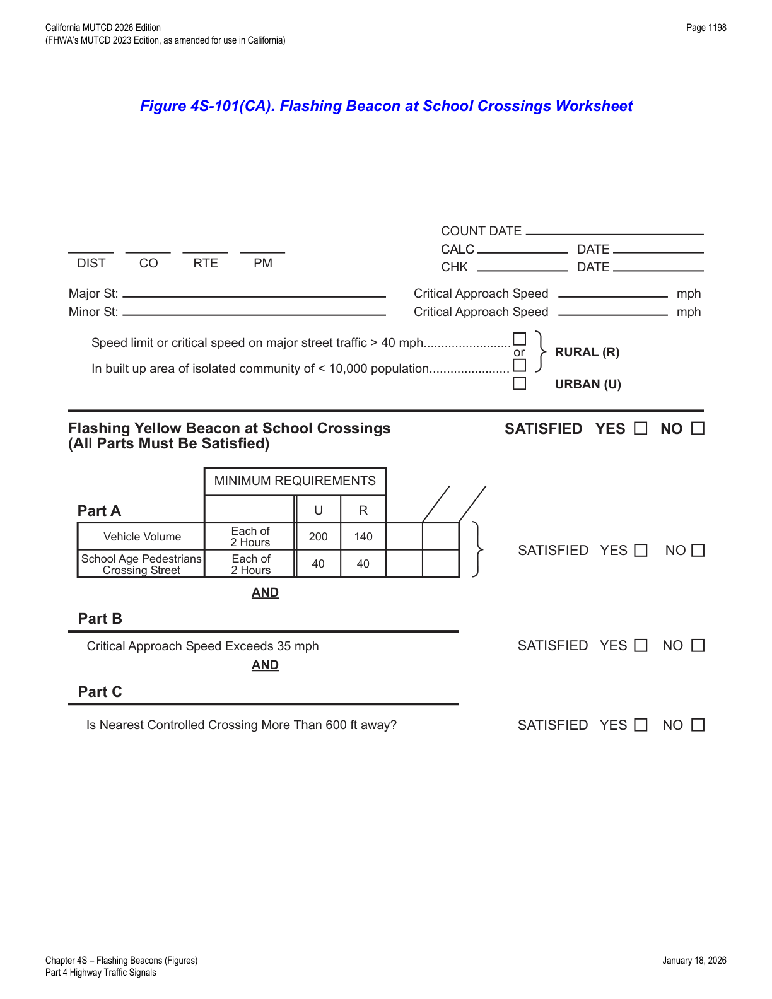

Part 4 · Highway Traffic Signals · Chapter 4S
Flashing Beacons
General design and flash-rate rules for flashing beacons, plus the five specific beacon types — Intersection Control, Warning, Speed Limit Sign, Stop, and California's school-crossing, fire-station, and freeway-bus-stop beacons.
4S.01General Design and Operation of Flashing Beacons
- 01A flashing beacon is a highway traffic signal with one or more signal sections that operates in a flashing mode. It can provide traffic control when used as an Intersection Control Beacon (see Section 4S.02) or it can provide warning when used in other applications (see Sections 4S.03, 4S.04, and 4S.05).
- 02Flashing beacon units, their mountings, signal visors, and backplates shall comply with the provisions of Chapters 4D and 4E, except as otherwise provided in this Chapter.
- 03Beacons shall be flashed at a rate of not less than 50 or more than 60 times per minute. The illuminated period of each flash shall be a minimum of ½ and a maximum of ⅔ of the total cycle.
- 04A beacon shall not be included within the border of a sign except for Interchange Exit Direction signs with advisory speed panels (see Section 2E.25).
- 05There shall be two nominal diameter sizes for flashing beacon signal indications: 8 inches and 12 inches.
- 06If used to supplement a warning or regulatory sign, the edge of the beacon signal housing should normally be located no closer than 12 inches outside of the nearest edge of the sign or from the nearest edge of any of the signs and plaques in a sign assembly.
- 07An automatic dimming device may be used to reduce the brilliance of flashing yellow signal indications during night operation.
- 08Backplates (see Section 4D.06) may be used with flashing beacons.
- 09Typical uses include:
- A. Obstructions in or immediately adjacent to the roadway.
- B. Supplemental to advance warning signs.
- C. At mid-block crosswalks.
- D. At intersections where a warning is appropriate.
- 10Only warning, regulatory or construction signs may be supplemented by flashing beacons.
4S.02Intersection Control Beacon
- 01An Intersection Control Beacon shall consist of one or more signal faces directed toward each approach to an intersection. Each signal face shall consist of one or more signal sections of a standard traffic signal face, with flashing CIRCULAR YELLOW or CIRCULAR RED signal indications in each signal face. They shall be installed and used only at an intersection to control two or more directions of travel.
- 02Application of Intersection Control Beacon signal indications shall be limited to the following:
- A. Yellow on one route (normally the major street) and red for the remaining approaches that are controlled by STOP signs, or
- B. Red for all approaches (if all of the intersection approaches are controlled by STOP signs).
- 03Flashing yellow signal indications shall not face conflicting vehicular approaches.
- 04A STOP sign (see Section 2B.04) shall be used on approaches to which a flashing red signal indication is displayed on an Intersection Control Beacon.
- 05If two horizontally-aligned red signal indications are used on an approach for an Intersection Control Beacon, they shall be flashed simultaneously to avoid being confused with grade crossing flashing-light signals. If two vertically-aligned red signal indications that have a physical separation between them are used on an approach for an Intersection Control Beacon, they shall be flashed alternately.
- 06Twelve-inch signal indications shall be used for Intersection Control Beacons facing approaches where:
- A. Road users view both Intersection Control Beacon and lane-use control signal indications simultaneously; or
- B. The nearest Intersection Control Beacon signal face is more than 120 feet beyond the stop line, unless a supplemental near-side Intersection Control Beacon signal face is provided.
- 07Twelve-inch signal indications should be used for Intersection Control Beacons facing approaches where:
- A. The posted or statutory speed limit or the 85th-percentile approach speed is higher than 40 mph, or
- B. Where only post-mounted flashing beacon signal faces are used.
- 08An Intersection Control Beacon should not be mounted on a pedestal in the roadway unless the pedestal is within the confines of a traffic or pedestrian island.
- 09Supplemental signal indications may be used on one or more approaches in order to provide adequate visibility to approaching road users.
- 10Intersection Control Beacons may be used at intersections where traffic or physical conditions do not justify conventional traffic control signals but crash rates indicate the possibility of a special need.
- 11An Intersection Control Beacon is generally located over the center of an intersection; however, it may be used at other suitable locations.
- 12The cost of installing an Intersection Control Beacon and intersection lighting is shared with the local agency in the same manner as a traffic signal.
- 13On undivided highways or on highways where the median is less than 8 feet wide, the installation may consist of a single standard located off of the right shoulder or Type 9 cantilever flashing beacon installation as described for use on divided highways, or it may be a Type 15-FBS flashing beacon installation.
4S.03Warning Beacon
- 01Typical applications of Warning Beacons include the following:
- A. As supplemental emphasis to signs or object markers on or in front of obstructions that are in or immediately adjacent to the roadway;
- B. As supplemental emphasis to warning signs;
- C. As emphasis for midblock crosswalks;
- D. As supplemental emphasis to regulatory signs, except STOP, DO NOT ENTER, WRONG WAY, and SPEED LIMIT signs; and
- E. In conjunction with a regulatory or warning sign that includes the phrase WHEN FLASHING in its legend or on a supplemental plaque to indicate that the regulation is in effect or that the condition is present only at certain times. Section 2A.12 prohibits the use of flashing LED units within the legend or border of the sign in conjunction with the phrase WHEN FLASHING in its legend or on a supplemental plaque.
- 02A Warning Beacon shall consist of one or more signal sections of a standard traffic signal face with a flashing CIRCULAR YELLOW signal indication in each signal section.
- 03A Warning Beacon shall be used only to supplement an appropriate warning or regulatory sign or marker.
- 04Warning Beacons, if used at intersections, shall not face conflicting vehicular approaches.
- 05The condition or regulation justifying Warning Beacons should largely govern their location with respect to the roadway.
- 06If an obstruction is in or adjacent to the roadway, illumination of the lower portion or the beginning of the obstruction or illumination of the sign on or in front of the obstruction, in addition to the beacon, should be considered.
- 07Warning Beacons should be operated only during those periods or times when the condition or regulation exists.
- 08If Warning Beacons have more than one signal section, they may be flashed either alternately or simultaneously.
- 09A Warning Beacon interconnected with a traffic signal controller assembly may be used with a BE PREPARED TO STOP (W3-4) sign and a WHEN FLASHING (W16-13P) plaque (see Section 2C.35).
- 10Warning Beacons that are actuated by pedestrians, bicyclists, or other road users may be used as appropriate to provide additional warning to vehicles approaching a crossing or other location.
- 11An audible information device should be used with pedestrian-actuated Warning Beacons to assist pedestrians with vision disabilities.
- 12If an audible information device is used in conjunction with a pedestrian-actuated Warning Beacon at a pedestrian crossing, the audible information device shall not use vibrotactile indications or percussive indications.
- 13If an audible information device is used in conjunction with a pedestrian-actuated Warning Beacon at a pedestrian crossing, the audible message should be a speech message that says, "Warning lights are flashing." The audible message should be spoken twice.
- 14Where a warning beacon is located 200 feet or less from a grade crossing, an engineering study should be made to evaluate the placement and determine if queuing could impact the grade crossing.
4S.04Speed Limit Sign Beacon
- 01A Speed Limit Sign Beacon shall be used only to supplement a Speed Limit sign.
- 02A Speed Limit Sign Beacon shall consist of one or more signal sections of a standard traffic control signal face, with a flashing CIRCULAR YELLOW signal indication in each signal section. If two or more signal indications are used, they shall be alternately flashed.
- 03A Speed Limit Sign Beacon may be used with a fixed or variable Speed Limit sign. If applicable, a flashing Speed Limit Sign Beacon (with an appropriate accompanying sign) may be used to indicate that the displayed speed limit is in effect.
4S.05Stop Beacon
- 01A Stop Beacon shall be used only to supplement a STOP sign, a DO NOT ENTER sign, or a WRONG WAY sign.
- 02A Stop Beacon shall consist of one or more signal sections of a standard traffic signal face with a flashing CIRCULAR RED signal indication in each signal section. If two horizontally-aligned signal indications are used for a Stop Beacon, they shall be flashed simultaneously to avoid being confused with grade crossing flashing-light signals. If two vertically-aligned signal indications are used for a Stop Beacon, they shall be flashed alternately.
- 03The edge of the signal housing of a Stop Beacon should be not less than 12 inches or more than 24 inches from the nearest edge of the STOP sign, DO NOT ENTER sign, or WRONG WAY sign that it supplements.
- 04A Stop Sign Flashing Beacon consists of one or two signal sections with a flashing circular red indication in each section.
4S.101(CA)Flashing Beacons at School Crosswalks
- 01Flashing yellow beacons may be installed to supplement standard school signing and markings for the purpose of providing advanced warning during specified times of operation when justified.
- 02Flashing beacons at school crosswalks may be installed on State highways in accordance with CVC §§ 21372 and 21373.
- 03A flashing yellow beacon can be considered under the following conditions:
- A. The uncontrolled school crossing is on the "Suggested Route to School"; and
- B. At least 40 school pedestrians use the crossing during each of any two hours (not necessarily consecutive) of a normal school day; and
- C. The crossing is at least 600 feet from the nearest alternate crossing controlled by traffic signals, stop signs or crossing guards; and
- D. The vehicular volume through the crossing exceeds 200 vehicles per hour in urban areas or 140 vehicles per hour in rural areas during the same hour the students are going to and from school during normal school hours; and
- E. The critical approach speeds exceeds 35 mph or the approach visibility is less than the stopping sight distance.
- 04If school authorities are to operate the flashing yellow beacon, an inter-agency agreement needs to be executed to assure designation of a responsible adult to operate the beacon controls and to provide accessibility for necessary equipment maintenance.
- 05Figure 4S-101(CA) shows the worksheet for flashing beacon at school crossings.

In practice: the worksheet requires all of Part A (vehicle volume AND school pedestrian volume thresholds), Part B (critical approach speed exceeds 35 mph), and Part C (nearest controlled crossing is more than 600 feet away) to be satisfied — it is an all-or-nothing checklist, not a weighted score, and the urban/rural vehicle-volume threshold (200 vs. 140 vph) is determined by whether the location is within a built-up area of an isolated community under 10,000 population.
4S.102(CA)Flashing Beacons for Fire Stations
- 01Flashing beacons at fire station driveways or at intersections immediately adjacent to a fire station may be installed.
- 02The flashing beacon shall be used only to supplement an appropriate warning or regulatory sign. The flashing beacon shall be actuated from a non-illuminated condition by a switch at the fire station.
4S.103(CA)Flashing Beacons at Bus Stops on Freeway Interchanges
- 01At locations of approved bus stops within interchange areas, a flashing beacon may be provided near the top of a lighting standard to provide a flag stop.
- 02The following design and operational requirements shall be met:
- A. A push button shall be provided on the lighting standard with a sign explaining the purpose and operation. The sign shall state that if no bus has arrived within 15 minutes (or other time) after the button has been actuated it will be necessary to actuate it again.
- B. The flashing beacon shall consist of an 8-inch signal section with an uncolored or white lens mounted on the lighting standard in such a position that an approaching bus driver can see it on the freeway.
- C. The operation of the control shall be such that the flashing beacon will operate for 15 minutes after the button has been actuated and then go out.
In practice: Sections 4S.101(CA) through 4S.103(CA) are California-specific additions to the national MUTCD framework — they extend the general flashing-beacon toolkit (Sections 4S.01–4S.05) to three specialized, state-specific use cases: school crossings, fire station egress, and freeway-interchange bus flag stops.
★ Key Takeaways — Chapter 4S
- All flashing beacons flash 50–60 times per minute (illuminated ½ to ⅔ of the cycle) and come in two nominal sizes, 8 inches and 12 inches; a beacon is never placed inside a sign's border except on Interchange Exit Direction signs with advisory speed panels.
- Intersection Control Beacon: flashing yellow on the major route with flashing red (STOP-sign-backed) on minor approaches, or flashing red on all approaches if all are STOP-controlled; 12-inch lenses required at high-speed approaches or where the beacon sits more than 120 feet beyond the stop line.
- Warning Beacon: flashing CIRCULAR YELLOW only, supplementing a warning/regulatory sign (never STOP, DO NOT ENTER, WRONG WAY, or SPEED LIMIT signs); Speed Limit Sign Beacon and Stop Beacon are distinct, narrowly-scoped beacon types with their own required sign pairings.
- Audible devices paired with pedestrian-actuated Warning Beacons must be spoken-word ("Warning lights are flashing," spoken twice) — never vibrotactile or percussive.
- California-specific additions cover school crosswalk beacons (all-or-nothing 3-part worksheet: volume thresholds, approach speed >35 mph, and 600+ ft from the nearest controlled crossing), fire station beacons (switch-actuated from the station), and freeway-interchange bus-stop beacons (8-inch white lens, 15-minute auto-timeout after push-button actuation).